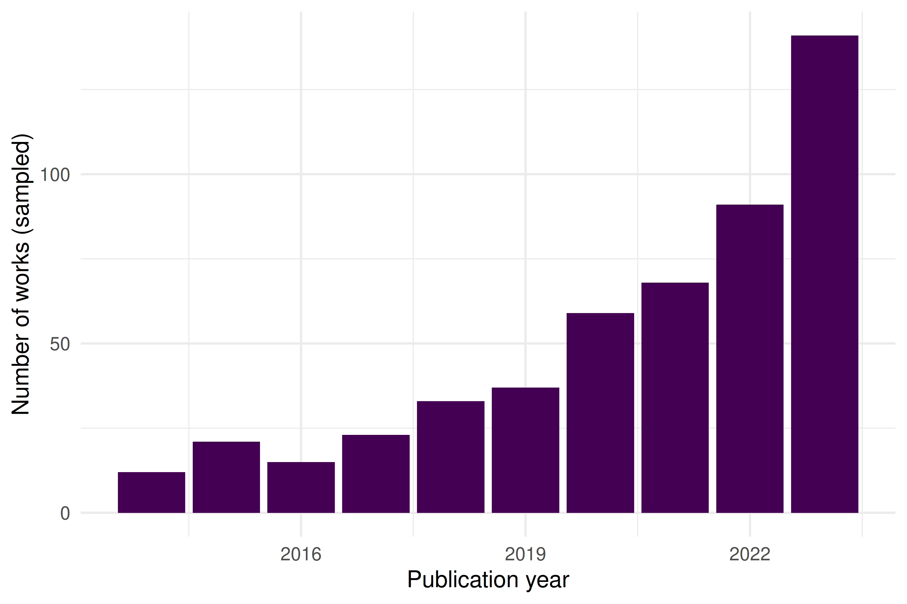
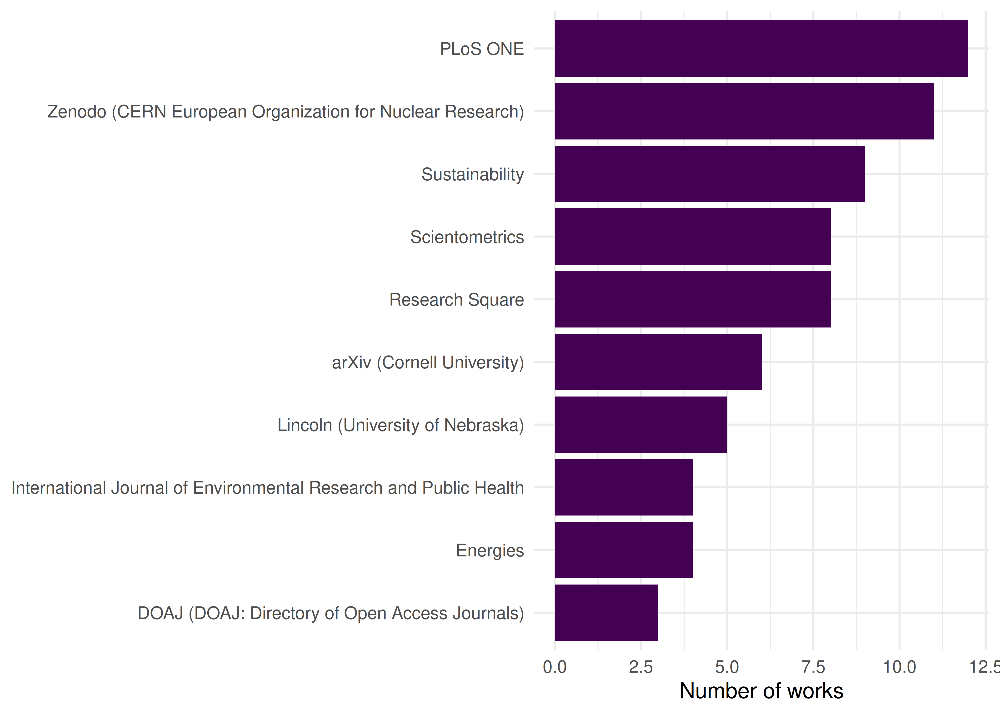
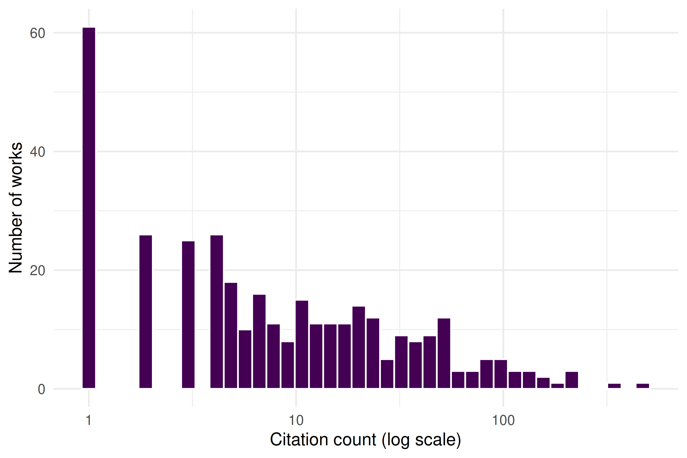

2 What Is Scientometrics?
2.1 Learning objectives
After completing this chapter, you will be able to:
- Define scientometrics, bibliometrics, and informetrics and explain how the three fields relate
- Trace the historical development of scientometrics from Garfield’s citation indexes through Price’s quantitative studies to the present day
- Identify the types of research questions that scientometric methods can address
- Retrieve a small sample of scholarly works from OpenAlex and produce basic descriptive statistics in R
- Create simple visualisations of publication trends and journal distributions
2.3 Conceptual background
Scientometrics is the quantitative study of science itself — its growth, structure, productivity, and impact. Where scientists in most disciplines study the natural or social world, scientometricians turn the lens inward: they study the system that produces scientific knowledge.
The term sits within a family of overlapping labels. Bibliometrics, the oldest sibling, focuses on the statistical analysis of publications — books, journal articles, and their metadata such as authors, citations, and keywords. The word was coined by Alan Pritchard in 1969 to replace the earlier “statistical bibliography”. Informetrics is the broadest umbrella, encompassing any quantitative study of information transfer, including web analytics, patent analysis, and library usage statistics. In practice, the three terms are often used interchangeably, but it helps to remember that bibliometrics emphasises the document, scientometrics emphasises the science, and informetrics emphasises the information.
2.3.1 A brief history
The intellectual roots of the field trace back to at least 1955, when Eugene Garfield (1955) proposed the idea of a citation index for science. Garfield argued that citations create an “association of ideas” — a traceable web of intellectual influence — and that indexing these links would transform how scholars discover literature. His vision was realised in the Science Citation Index (SCI), launched in 1964 by the Institute for Scientific Information (ISI). For the first time, researchers could systematically trace who cited whom across the entire scientific literature.
A few years later, Derek de Solla Price gave the field its quantitative backbone. In Little Science, Big Science (Solla Price 1963), Price marshalled data to show that science was growing exponentially — in the number of journals, articles, and scientists — and that this growth followed remarkably regular statistical patterns. He estimated that the volume of scientific literature doubles approximately every 15 years, a regularity so striking that it came to be known as “Price’s Law.” Price’s work established that science could be studied with the same empirical rigour that it applies to other phenomena.
These foundations were reinforced by earlier statistical regularities. Alfred Lotka (1926) had already shown that the distribution of scientific productivity follows a power law: a small number of authors produce the majority of papers. Samuel Bradford (1934) demonstrated a similar pattern for journal coverage: a core set of journals in any field accounts for a disproportionate share of the relevant literature. These laws, which we explore in detail in the next chapter, remain cornerstones of scientometric theory.
From these beginnings, scientometrics expanded rapidly through the latter half of the twentieth century. The h-index (Hirsch 2005), journal impact factors, co-citation networks, and science maps became standard tools in research evaluation and science policy. Landmark declarations such as the Leiden Manifesto (Hicks et al. 2015) and DORA (American Society for Cell Biology 2012) later established principles for responsible use of these tools, warning against mechanical reliance on any single indicator.
2.3.2 The modern era
Today the field is undergoing another transformation. The launch of OpenAlex (Priem et al. 2022) — a fully open index of over 250 million scholarly works, built from Crossref, PubMed, institutional repositories, and other open sources — has democratised access to the raw data that powers scientometric research. Researchers no longer need expensive subscriptions to Web of Science or Scopus to conduct large-scale analyses. This book takes advantage of that openness: every example uses data that any reader can reproduce for free.
2.3.3 Scope of this book
This book teaches you to do scientometrics in R. It covers:
- Data acquisition — querying OpenAlex, Crossref, and PubMed programmatically.
- Core bibliometrics — computing productivity, impact, and citation indicators.
- Network analysis — building and analysing co-authorship, co-citation, and keyword co-occurrence networks.
- Text and topic analysis — extracting themes and trends from titles, abstracts, and full texts.
- Advanced topics — altmetrics, open science, gender equity, retraction analysis, and more.
- Production — building reproducible pipelines, dashboards, and reports.
Each chapter follows the same pattern: conceptual background, a fully reproducible worked example, diagnostics, limitations, and exercises.
2.4 Worked example
To make things concrete from the very first chapter, we fetch a small sample of recent works from OpenAlex and compute some basic descriptive statistics. Think of this as a first taste of the workflows that the rest of the book will develop in depth.
2.4.1 Fetching a sample from OpenAlex
We search for works whose title or abstract mentions “scientometrics”, published between 2014 and 2023, and draw a random sample of 500 records.
works <- oa_fetch(
entity = "works",
search = "scientometrics",
from_publication_date = "2014-01-01",
to_publication_date = "2023-12-31",
options = list(sample = 500, seed = 42)
)
cat(glue("Fetched {nrow(works)} works\n"))#> Fetched 500 works
glimpse(works)#> Rows: 500
#> Columns: 45
#> $ id <chr> "https://openalex.org/W4289666455", "htt…
#> $ title <chr> "STRATEGIES TO PERFORM A MIXED METHODS S…
#> $ display_name <chr> "STRATEGIES TO PERFORM A MIXED METHODS S…
#> $ authorships <list> [<tbl_df[1 x 7]>], [<tbl_df[1 x 7]>], […
#> $ abstract <chr> "Mixed methods research is an approach t…
#> $ doi <chr> "https://doi.org/10.5281/zenodo.1406214"…
#> $ publication_date <date> 2018-08-30, 2021-09-20, 2020-05-19, 202…
#> $ publication_year <int> 2018, 2021, 2020, 2023, 2023, 2022, 2023…
#> $ relevance_score <dbl> 1, 1, 1, 1, 1, 1, 1, 1, 1, 1, 1, 1, 1, 1…
#> $ fwci <dbl> 8.116, 0.000, 18.155, 0.328, NA, 11.792,…
#> $ cited_by_count <int> 132, 0, 139, 1, 0, 46, 0, 25, 37, 95, 0,…
#> $ counts_by_year <list> [<data.frame[7 x 2]>], NA, [<data.frame…
#> $ ids <list> <"https://openalex.org/W4289666455", "h…
#> $ type <chr> "article", "article", "article", "articl…
#> $ is_oa <lgl> TRUE, TRUE, FALSE, TRUE, TRUE, TRUE, TRU…
#> $ is_oa_anywhere <lgl> TRUE, TRUE, FALSE, TRUE, TRUE, TRUE, TRU…
#> $ oa_status <chr> "green", "diamond", "closed", "hybrid", …
#> $ oa_url <chr> "https://doi.org/10.5281/zenodo.1406214"…
#> $ any_repository_has_fulltext <lgl> TRUE, FALSE, FALSE, FALSE, TRUE, TRUE, T…
#> $ source_display_name <chr> "Zenodo (CERN European Organization for …
#> $ source_id <chr> "https://openalex.org/S4306400562", "htt…
#> $ issn_l <chr> NA, "2692-1081", "1530-5627", "2773-6997…
#> $ host_organization <chr> "https://openalex.org/I67311998", NA, "h…
#> $ host_organization_name <chr> "European Organization for Nuclear Resea…
#> $ landing_page_url <chr> "https://doi.org/10.5281/zenodo.1406214"…
#> $ pdf_url <chr> NA, "https://biogenericpublishers.com/pd…
#> $ license <chr> "cc-by", NA, NA, "cc-by", "cc-by", "cc-b…
#> $ version <chr> NA, "publishedVersion", "publishedVersio…
#> $ referenced_works <list> NA, <"https://openalex.org/W189804332",…
#> $ referenced_works_count <int> 0, 36, 5, 69, 33, 66, 36, 98, 64, 98, 0,…
#> $ related_works <list> <"https://openalex.org/W2899084033", "h…
#> $ concepts <list> [<data.frame[1 x 5]>], [<data.frame[10 …
#> $ topics <list> [<tbl_df[12 x 5]>], [<tbl_df[12 x 5]>],…
#> $ keywords <list> [<data.frame[1 x 3]>], [<data.frame[10 …
#> $ is_paratext <lgl> FALSE, FALSE, FALSE, FALSE, FALSE, FALSE…
#> $ is_retracted <lgl> FALSE, FALSE, FALSE, FALSE, FALSE, FALSE…
#> $ language <chr> "en", "en", "en", "en", "en", "en", "en"…
#> $ sustainable_development_goals <list> NA, [<data.frame[1 x 3]>], [<data.frame…
#> $ awards <list> NA, NA, NA, NA, NA, <"https://openalex.…
#> $ funders <list> NA, [<data.frame[3 x 3]>], NA, NA, [<da…
#> $ apc <list> NA, NA, NA, NA, NA, [<data.frame[2 x 5]…
#> $ first_page <chr> NA, NA, "1118", "4", NA, "2871", NA, "27…
#> $ last_page <chr> NA, NA, "1119", "22", NA, "2896", NA, "2…
#> $ volume <chr> NA, "10", "26", "3", NA, "127", NA, "14"…
#> $ issue <chr> NA, "1", "9", "2", NA, "5", NA, "3", "1"…Each row is a scholarly work. Key columns include display_name (the title), publication_date, cited_by_count, doi, and source_display_name (the source or journal name).
2.4.2 Basic descriptive statistics
How many works did we retrieve, and what does the citation distribution look like?
works_summary <- works |>
summarise(
n_works = n(),
doi_coverage = scales::percent(mean(!is.na(doi))),
median_cites = median(cited_by_count, na.rm = TRUE),
mean_cites = round(mean(cited_by_count, na.rm = TRUE), 1),
max_cites = max(cited_by_count, na.rm = TRUE),
zero_cites = sum(cited_by_count == 0)
)
works_summary#> # A tibble: 1 × 6
#> n_works doi_coverage median_cites mean_cites max_cites zero_cites
#> <int> <chr> <dbl> <dbl> <int> <int>
#> 1 500 89% 3 15.2 471 152The large gap between the mean and median is a hallmark of citation distributions: most papers receive few citations while a small number accumulate many. This skewness is one of the most robust empirical regularities in scientometrics, and we will return to its theoretical basis in 3.3.
2.4.3 Top journals
Which journals appear most often in our sample?
top_journals <- works |>
filter(!is.na(source_display_name)) |>
count(source_display_name, sort = TRUE) |>
head(10)
top_journals#> # A tibble: 10 × 2
#> source_display_name n
#> <chr> <int>
#> 1 PLoS ONE 11
#> 2 Research Square 11
#> 3 Zenodo (CERN European Organization for Nuclear Research) 10
#> 4 arXiv (Cornell University) 9
#> 5 Lincoln (University of Nebraska) 7
#> 6 Scientometrics 5
#> 7 Sustainability 5
#> 8 Buildings 4
#> 9 International Journal of Environmental Research and Public Health 4
#> 10 SHS Web of Conferences 42.4.4 Publication trend over time
works |>
mutate(year = year(publication_date)) |>
count(year) |>
ggplot(aes(x = year, y = n)) +
geom_col(fill = palette_sci(1)) +
labs(
x = "Publication year",
y = "Number of works (sampled)"
) +
theme_sci()
Figure 2.1: Annual publication counts for sampled works related to scientometrics (2014–2023).
The trend shows a growing volume of scientometrics-related publications over the past decade — consistent with the broader exponential growth of science documented by Solla Price (1963).
2.4.5 Top journals visualised
top_journals |>
mutate(source_display_name = fct_reorder(source_display_name, n)) |>
ggplot(aes(x = n, y = source_display_name)) +
geom_col(fill = palette_sci(1)) +
labs(
x = "Number of works",
y = NULL
) +
theme_sci()
Figure 2.2: Top 10 journals by number of works in the sampled scientometrics corpus.
2.4.6 Citation distribution
works |>
filter(cited_by_count > 0) |>
ggplot(aes(x = cited_by_count)) +
geom_histogram(bins = 40, fill = palette_sci(1), colour = "white") +
scale_x_log10() +
labs(
x = "Citation count (log scale)",
y = "Number of works"
) +
theme_sci()
Figure 2.3: Citation distribution of sampled scientometrics works (log-scaled x-axis).
This right-skewed citation distribution is a universal feature of scholarly communication. In Chapter 2, we will see that it connects to deeper theoretical regularities: Lotka’s Law, Bradford’s Law, and the Matthew Effect.
2.5 Diagnostics and interpretation
Even for a simple descriptive analysis, a few diagnostic checks are essential:
-
Sample vs. population. We drew a random sample of 500 works. The publication trend reflects the underlying population only if the sampling was truly random within the date window. OpenAlex’s
sampleparameter does this, but always verify the date range of returned results. - Source coverage. OpenAlex is strongest in English-language, peer-reviewed journal articles. Conference proceedings, book chapters, and grey literature may be underrepresented. Our “top journals” list reflects what OpenAlex indexes, not the full universe of scientometrics publishing.
-
Citation counts are snapshots. The
cited_by_countfield reflects the current citation total at the time of the API query. Older papers have had more time to accumulate citations, so direct comparisons across years are misleading without normalization.
#> Date range: 2014-01-01 to 2023-12-31#> Works with zero citations: 152#> Unique journals: 3652.7 Limitations and responsible use
- Descriptive statistics are not evaluations. Counting publications and citations describes activity, not quality. A high publication count may reflect salami slicing; a high citation count may reflect controversy rather than excellence.
- Data source bias. OpenAlex, like all databases, has systematic coverage gaps. English-language STEM journals are overrepresented; social sciences, humanities, and non-English scholarship are underrepresented. Always report the data source and its known limitations.
- Ecological fallacy. Aggregate statistics about a field do not apply to individual researchers. A growing field does not mean every researcher in it is productive.
- The Leiden Manifesto (Hicks et al. 2015) and DORA (American Society for Cell Biology 2012) provide essential guardrails. Quantitative data should support, never replace, expert qualitative judgement.
2.9 Common pitfalls
- Confusing scientometrics with research evaluation. Scientometrics provides tools for studying science; it does not provide verdicts on the value of individual researchers or papers.
- Treating OpenAlex counts as ground truth. OpenAlex counts may differ from Web of Science or Scopus due to different coverage, deduplication, and metadata parsing. Always triangulate when precision matters.
- Ignoring the citation window. Comparing raw citation counts across publication years is misleading. A 2023 paper with 5 citations may be performing better than a 2015 paper with 20. Field- and time-normalised indicators (covered in Chapter 10) address this.
- Overgeneralising from a sample. A random sample of 500 works is useful for learning and prototyping. Drawing conclusions about an entire field requires a comprehensive corpus.
-
Forgetting to set a seed. Random samples are only reproducible if you set the seed both in R (
set.seed()) and in the API call (seedparameter). Without this, every render produces different results.
2.10 Exercises
Explore a different field. Replace the search term “scientometrics” with a topic of your choice (e.g., “machine learning”, “climate change”). Fetch 500 works and compare the publication trend and top journals to those we found above. What differences do you notice?
Uncited works. What fraction of the sampled works have zero citations? Filter to uncited works and examine their publication years. Is there a pattern? (Hint: very recent works are more likely to be uncited.)
Open Access status. OpenAlex records an
is_oafield. Compute the proportion of open-access works in your sample and plot how it has changed over time. What trend do you observe?Growth curve. Extend the publication trend analysis to 2000–2023. Does the annual publication count follow an exponential growth pattern, as Solla Price (1963) predicted? (Hint: plot on a log-scaled y-axis and check for linearity.)
2.11 Solutions
Solutions are provided in 2.11.
2.12 Further reading
- Garfield (1955) — The foundational paper proposing citation indexes for science; the intellectual starting point for the entire field.
- Solla Price (1963) — Little Science, Big Science; the first systematic quantitative study of the growth of science.
- Priem et al. (2022) — The OpenAlex paper; describes the open data infrastructure that powers the examples in this book.
- Hicks et al. (2015) — The Leiden Manifesto; ten principles for the responsible use of research metrics.
- American Society for Cell Biology (2012) — The San Francisco Declaration on Research Assessment; a landmark call to improve research evaluation.
-
Aria and Cuccurullo (2017) — The
bibliometrixR package; a comprehensive tool for science mapping and bibliometric analysis. - Hirsch (2005) — The h-index paper; illustrates how a single indicator reshaped research evaluation discourse.
- Lotka (1926) — The foundational study of scientific productivity distributions; a bridge to Chapter 2.
2.13 Session info
#> R version 4.4.1 (2024-06-14)
#> Platform: x86_64-pc-linux-gnu
#> Running under: Ubuntu 24.04.4 LTS
#>
#> Matrix products: default
#> BLAS: /usr/lib/x86_64-linux-gnu/openblas-pthread/libblas.so.3
#> LAPACK: /usr/lib/x86_64-linux-gnu/openblas-pthread/libopenblasp-r0.3.26.so; LAPACK version 3.12.0
#>
#> locale:
#> [1] LC_CTYPE=C.UTF-8 LC_NUMERIC=C LC_TIME=C.UTF-8
#> [4] LC_COLLATE=C.UTF-8 LC_MONETARY=C.UTF-8 LC_MESSAGES=C.UTF-8
#> [7] LC_PAPER=C.UTF-8 LC_NAME=C LC_ADDRESS=C
#> [10] LC_TELEPHONE=C LC_MEASUREMENT=C.UTF-8 LC_IDENTIFICATION=C
#>
#> time zone: UTC
#> tzcode source: system (glibc)
#>
#> attached base packages:
#> [1] stats graphics grDevices utils datasets methods base
#>
#> other attached packages:
#> [1] glue_1.8.1 openalexR_3.0.1 lubridate_1.9.5 forcats_1.0.1
#> [5] stringr_1.6.0 dplyr_1.2.1 purrr_1.2.2 readr_2.2.0
#> [9] tidyr_1.3.2 tibble_3.3.1 ggplot2_4.0.3 tidyverse_2.0.0
#>
#> loaded via a namespace (and not attached):
#> [1] viridis_0.6.5 utf8_1.2.6 sass_0.4.10 generics_0.1.4
#> [5] xml2_1.5.2 stringi_1.8.7 hms_1.1.4 digest_0.6.39
#> [9] magrittr_2.0.5 timechange_0.4.0 evaluate_1.0.5 grid_4.4.1
#> [13] RColorBrewer_1.1-3 bookdown_0.46 fastmap_1.2.0 rprojroot_2.1.1
#> [17] jsonlite_2.0.0 gridExtra_2.3 httr_1.4.8 viridisLite_0.4.3
#> [21] scales_1.4.0 codetools_0.2-20 jquerylib_0.1.4 cli_3.6.6
#> [25] rlang_1.2.0 withr_3.0.2 cachem_1.1.0 yaml_2.3.12
#> [29] otel_0.2.0 tools_4.4.1 tzdb_0.5.0 memoise_2.0.1
#> [33] here_1.0.2 brand.yml_0.1.0 curl_7.1.0 vctrs_0.7.3
#> [37] R6_2.6.1 lifecycle_1.0.5 fs_2.1.0 pkgconfig_2.0.3
#> [41] pillar_1.11.1 bslib_0.10.0 gtable_0.3.6 xfun_0.57
#> [45] tidyselect_1.2.1 rstudioapi_0.18.0 knitr_1.51 dichromat_2.0-0.1
#> [49] farver_2.1.2 htmltools_0.5.9 labeling_0.4.3 rmarkdown_2.31
#> [53] compiler_4.4.1 S7_0.2.2 downlit_0.4.5